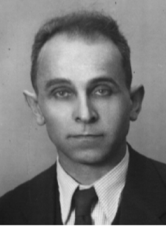
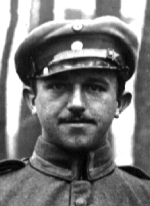
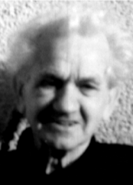
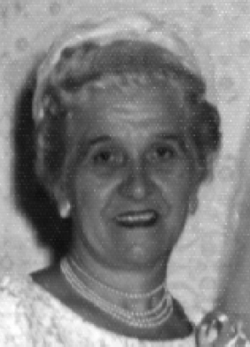

Emilie’s Early Years
Friedrich and Maria Baumann
Emilie Georgina Baumann was the only daughter of Friedrich Baumann and Maria Dosch Baumann, a hardworking family whose story intertwined with the industrial and social life of early 20th-century Germany.
Andreas Michael Friedrich Baumann was born on December 21, 1868, in Crailsheim, Baden, Germany. Known throughout his life as Friedrich, he was confirmed in 1882 in Crailsheim as a member of the Protestant Church. His professional life reflected Germany’s industrial age—he worked as a locomotive engineer, ironworker, and later as a foreman with BASF in Ludwigshafen. Friedrich died on August 9, 1943, in Ludwigshafen and was buried on August 12, 1943, in Oppau, Pfalz, Germany.
Friedrich married Maria Dosch, daughter of Georg Gottlieb Dosch and Maria Magdalena Gohring, on July 31, 1892, in Blaufelden, Germany. Maria was born on May 18, 1869, in Brettenfeld, Baden, Germany, and confirmed in 1883 in Rot am See. She worked as a dressmaker. Maria died on September 18, 1954, in Oppau at the age of 85, and was buried there on September 20, 1954.
The Baumann Children
Friedrich and Maria had five children, each following their own path through the turbulence of the early 20th century.
|  | Friedrich (Fritz) Baumann Jr. (born January 26, 1892, Blaufelden; died August 12, 1964, Munich) — confirmed on April 1, 1906, in Rot am See. He worked as a newspaper reporter and typesetter in Munich and spent several years in Italy as a correspondent. Egon notes that Fritz deserted the German Army during WWI, worked on an Italian newspaper (likely becoming fluent in Italian), and later served as the Italian correspondent for Munich’s largest paper, the Neueste Nachrichten. Fritz married Emma Richter (born May 18, 1892, Wurzen; died February 11, 1971). |
|  | Karl Baumann (born May 18, 1893; died February 17, 1917, Lille, France). He died during World War I and was buried in Oppau, Pfalz, Germany in 1917. Emilie later wrote about him fondly in her autobiography, referring to him as “Karli.” |
|  | August Baumann (born August 12, 1898, Ludwigshafen; died January 21, 1984, Bad Dürkheim). He married Katharina (“Kätche”) Moellinger (daughter of Karl Moellinger) in December 1920. Katharina was born on December 20, 1900, and died on December 4, 1929, in Oppau. Their daughter is Erika Baumann Ihn Howald. August later married Laura (last name unknown) around 1943 in Oppau, with one daughter, Ursula; they divorced around 1944. He married a third time on December 31, 1952, in Brooklyn, NY, to Liesel Eberhahn (born January 18, 1909; died March 11, 1997, Bad Dürkheim). |
|
No Photo
Available |
Wilhelm (“Willie”) Baumann (born May 18, 1903; died July 1904, Oppau). The cause of death is unknown; a smallpox epidemic was affecting the region at that time. |
|  | Emilie Georgina Baumann (born April 23, 1911, Oppau; died July 24, 2003, Clearwater, Florida). Christened in 1911 and confirmed on April 13, 1924, in the Protestant Church in Oppau. She married Adam Schreiner on May 18, 1929, in Oppau. Emilie was naturalized on May 28, 1946, in Brooklyn, NY. The cause of death was a stroke; her ashes were scattered in the Gulf of Mexico on August 8, 2003. |
Roger notes that Emilie wrote an autobiography describing her early years in much greater detail; the family regards that document as an invaluable firsthand account of her life and the Baumann family’s history.